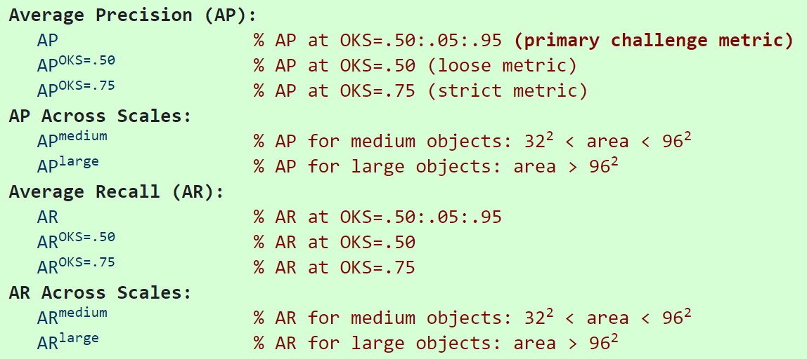

关键点检测的指标主要是OKS和PCK。其中OKS是现在的常用指标，PCK主要用在MPII等较老的数据集上，从OKS还衍生出AP和AR两个指标。
OKS (Object Keypoint Similarity)
\[
OKS_p = \frac{\sum_i\exp(\frac{-d^2_{pi}}{2S^2_p\sigma^2_i})\delta(v_{pi}=1)}{\sum_i\delta(v_{pi}=1)}
\]
\(p\) 表示person id
\(i\)表示 keypoint id
\(d_{pi}\)表示预测的关节点和标注的关节点的欧氏距离
\(S_p\) 表示尺度缩放因子，\(S_p=\sqrt{(x_2-x_1)(y_2-y_1)}\)
\(\sigma_i\) 表示第\(i\)个骨骼点的归一化因子，对数据集中所有groundtruth计算的标准差而得到的，反映出当前骨骼点标注时候的标准差， \(\sigma_i\)越大则越难标注
\(v_{pi}\)表示关节点是否可见
1
2
3
4
5
6
7
8
9
10
11
12
13
14
15
16
17
18
19
20
21
22
23
24
25
26
27
28
29
30
31
| def compute_oks(dts, gts):
if len(dts) * len(gts) == 0:
return np.array([])
oks_mat = np.zeros((len(dts), len(gts)))
for j, gt in enumerate(gts):
g = np.array(gt['keypoints'])
xg = g[0::3]; yg = g[1::3]; vg = g[2::3]
k1 = np.count_nonzero(vg > 0)
bb = gt['bbox']
x0 = bb[0] - bb[2]; x1 = bb[0] + bb[2] * 2
y0 = bb[1] - bb[3]; y1 = bb[1] + bb[3] * 2
for i, dt in enumerate(dts):
d = np.array(dt['keypoints'])
xd = d[0::3]; yd = d[1::3]
if k1>0:
dx = xd - xg
dy = yd - yg
else:
z = np.zeros((len(sigmas)))
dx = np.max((z, x0-xd),axis=0)+np.max((z, xd-x1),axis=0)
dy = np.max((z, y0-yd),axis=0)+np.max((z, yd-y1),axis=0)
e = (dx**2 + dy**2) / variances / (gt['area']+np.spacing(1)) / 2
if k1 > 0:
e=e[vg > 0]
oks_mat[i, j] = np.sum(np.exp(-e)) / e.shape[0]
return oks_mat
|
OKS 矩阵
对于多人姿态估计，若gt中M个人，预测了N个人，计算两两之间的OKS构成\(M\times N\)矩阵，最后选择每个gt的人中最大的OKS值作为结果。
PCK (Percentage of Correct Keypoints)
\[
PCK_p^i=\frac{\sum_p\delta(\frac{d_{pi}}{d_{p}^{def}}\le T_i)}{\sum_p1}
\]
\(p\) 表示person id
\(i\)表示 keypoint id
\(d_{pi}\)表示预测的关节点和标注的关节点的欧氏距离
\(d_{p}^{def}\) 表示尺度缩放因子，对于FLIC使用的是躯干直径（左肩到左臀或右肩到左臀），对于MPII用的是头部对角线的长度（PCKh）
\(T_i\) 表示第\(i\)个骨骼点的阈值
1
2
3
4
5
6
7
8
9
10
11
12
13
14
15
16
17
18
19
20
21
22
23
24
25
26
27
28
29
| def compute_pck_pckh(dt_kpts,gt_kpts,refer_kpts):
"""
pck指标计算
:param dt_kpts:算法检测输出的估计结果,shape=[n,h,w]=[行人数，２，关键点个数]
:param gt_kpts: groundtruth人工标记结果,shape=[n,h,w]
:param refer_kpts: 尺度因子，用于预测点与groundtruth的欧式距离的scale。
pck指标：躯干直径，左肩点－右臀点的欧式距离；
pckh指标：头部长度，头部rect的对角线欧式距离；
:return: 相关指标
"""
dt=np.array(dt_kpts)
gt=np.array(gt_kpts)
assert(len(refer_kpts)==2)
assert(dt.shape[0]==gt.shape[0])
ranges=np.arange(0.0,0.1,0.01)
kpts_num=gt.shape[2]
ped_num=gt.shape[0]
scale=np.sqrt(np.sum(np.square(gt[:,:,refer_kpts[0]]-gt[:,:,refer_kpts[1]]),1))
dist=np.sqrt(np.sum(np.square(dt-gt),1))/np.tile(scale,(gt.shape[2],1)).T
pck = np.zeros([ranges.shape[0], gt.shape[2]+1])
for idh,trh in enumerate(list(ranges)):
for kpt_idx in range(kpts_num):
pck[idh,kpt_idx] = 100*np.mean(dist[:,kpt_idx] <= trh)
pck[idh,-1] = 100*np.mean(dist <= trh)
return pck
|
PCK现在用的不多，主要用的是OKS
AP（Average Precision）& AR（Average Recall）
AP和AR都是针对整个数据集而言的。在算Precision或者Recall之前，必然先要对关键点检测结果进行排序，很多文章都没有明确这里排序的依据是什么。从实现上来看，是根据人检测框的置信度高低进行排序的。 \[
P=\frac{TP}{TP+FP}
\] \[
R=\frac{TP}{TP+FN}
\]
关于COCO上各个指标的具体定义可以参考下图

人体姿态估计－评价指标（一）_ZXF_1991的博客-CSDN博客